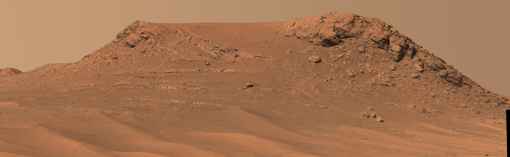
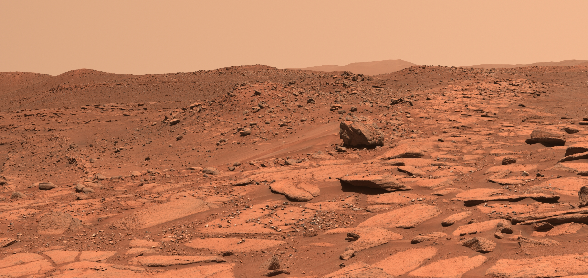
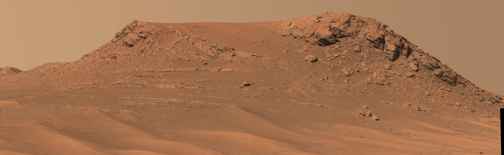
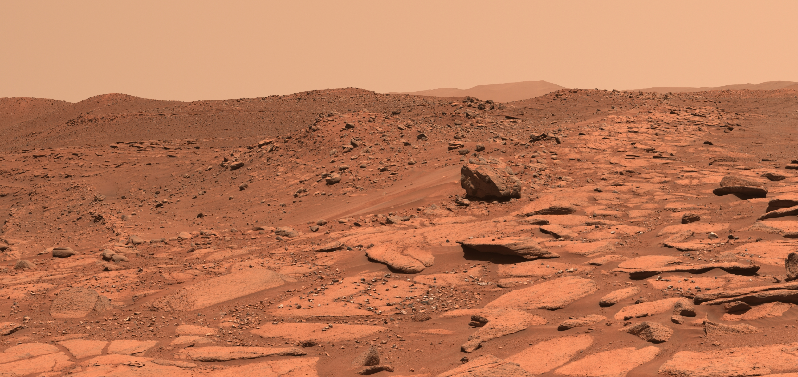

Welcome,
Astronomy Enthusiasts.
Embark on a journey of discovery as we explore the Galaxy together.
"Welcome to Starx ,
Please note that the captivating photos presented on this platform have been meticulously sourced through extensive research efforts. As a dedicated and passionate professional programmer, I've endeavored to bring you a collection of intriguing space-related content. Your curiosity and interest are greatly appreciated as we embark on this cosmic journey together."
on an extraordinary voyage through the cosmos as we explore the wonders of space together. From distant galaxies to stunning celestial phenomena, this platform is your gateway to unraveling the mysteries beyond our world. As a professional programmer, I'm thrilled to share my passion for space and technology with you. So, fasten your seatbelts and get ready to be inspired by the vastness and beauty of the universe!" ;

Embark on a journey of discovery as we explore the Galaxy together.

NASA recently announced that - for the first time - we’ve confirmed the water molecule, H2O, in sunlit areas of the Moon. This indicates that water is widely distributed across the lunar surface
In the late 2000s, a number of missions including the Indian Space Research Organization’s Chandrayaan-1, and NASA’s Cassini and Deep Impact detected hydration on the lunar surface – but these missions could not determine if the signals were hydroxyl (OH) or water (H2O).

During this same time period, using ultra-high-precision laboratory equipment, scientists found water molecules locked in glasses and minerals in the samples returned by the Apollo missions.
Since then, numerous missions have made similar detections, including our Lunar Reconnaissance Orbiter and LCROSS missions. The majority of signals come from permanently shadowed regions – craters at the Moon’s poles that never see sunlight. These areas are so cold that water within them gets trapped and can’t evaporate.

One of six instruments aboard the agency’s Mars Reconnaissance Orbiter, CRISM produced global maps of minerals on the Red Planet’s surface.
NASA switched off one of its oldest instruments studying Mars on April 3, a step that’s been planned since last year. Riding aboard NASA’s Mars Reconnaissance Orbiter, CRISM, or the Compact Reconnaissance Imaging Spectrometer for Mars, revealed minerals such as clays, hematite (otherwise known as iron oxide), and sulfates across the Red Planet’s surface for 17 years. Led by Johns Hopkins University’s Applied Physics Laboratory (APL) in Laurel, Maryland, CRISM produced high-resolution mineral maps crucial in helping scientists understand how lakes, streams, and groundwater shaped the planet billions of years ago. The instrument’s two detectors saw in visible and infrared light, spotting the chemical fingerprints, or spectra, of minerals that form in the presence of water.

Led by Johns Hopkins University’s Applied Physics Laboratory (APL) in Laurel, Maryland, CRISM produced high-resolution mineral maps crucial in helping scientists understand how lakes, streams, and groundwater shaped the planet billions of years ago. The instrument’s two detectors saw in visible and infrared light, spotting the chemical fingerprints, or spectra, of minerals that form in the presence of water. “Shutting down CRISM marks the end of an era for us,” said Rich Zurek, MRO’s project scientist at NASA’s Jet Propulsion Laboratory, which manages the mission. “It’s revealed where and how water transformed ancient Mars. The CRISM data products will be mined by scientists for years to come.”
In order to study infrared light, which is radiated by warm objects and is invisible to the human eye, CRISM relied on cryocoolers to isolate one of its spectrometers from the warmth of the spacecraft. Three cryocoolers were used in succession, and the last completed its lifecycle in 2017.
The CRISM team then looked for ways to continue producing data without the use of cryocoolers, deciding to create two new, nearly global maps. The first of these relied on data previously collected by the infrared spectrometer and by the second spectrometer on the instrument, which viewed a more limited range of minerals in visible and near-infrared light. This first map of water-related minerals, containing 5.6 gigapixels, has a spatial resolution of 600 feet (180 meters) per pixel and covers 86% of Mars. Scientists began releasing it in sections last year. For the second map, CRISM’s remaining spectrometer gathered data at an even higher spatial resolution (300 feet, or 90 meters per pixel). This map is slated for release in September.

“With these new maps, researchers can easily tie mineral deposits observed in high-resolution images to regional scale trends, landscape features, and geology,” said Kim Seelos, CRISM’s deputy principal investigator at APL. “Even though the CRISM investigation is formally coming to a close, I hope and expect to see many future scientists taking advantage of CRISM data for their research.”

The sun's nearest neighbor may actually host three planets, a new study reports
Astronomers have found evidence of a third planet circling Proxima Centauri, a red dwarf star that lies a mere 4.2 light-years from our solar system. The candidate world, known as Proxima d, is estimated to be just 25% as massive as Earth, making it one of the lightest known exoplanets if it ends up being confirmed.
"The discovery shows that our closest stellar neighbor seems to be packed with interesting new worlds, within reach of further study and future exploration,"
Proxima Centauri is known to host one planet for sure — the roughly Earth-size Proxima b, which completes one orbit every 11 Earth days. That puts Proxima b in the star's "habitable zone," the just-right range of orbital distances where liquid water could exist on a world's surface.
Unlike the Sun, which will evolve into a red giant in 6.5 billion years and reach the end of its life at an age of about 10 billion years, Proxima will stay on the main sequence for another four trillion years due to its low mass and low energy production. Since no star that age has ever been observed (because the universe is only about 13.787 billion years old), the future of Proxima and other low-mass red dwarfs – the most common stars in the universe – is uncertain. Stars with a mass of less than 0.25 solar masses do not evolve into red giants. Astronomers believe that, once they are no longer able to sustain nuclear fusion, these stars will remain small and, as the proportion of helium increases, they will grow hotter to become blue dwarfs. Blue dwarfs are purely hypothetical and their future existence is predicted based on evolutionary models. Toward the end of the blue dwarf phase, Proxima will become considerably more luminous, reaching up to 2.5% of the Sun’s luminosity. Once it runs out of hydrogen fuel, it will evolve into a white dwarf, skipping the red giant phase, and gradually lose all its heat energy.

The first known interstellar object to visit our solar system, 1I/2017 U1 ‘Oumuamua, was discovered Oct. 19, 2017 by the University of Hawaii’s Pan-STARRS1 telescope, funded by NASA’s Near-Earth Object Observations (NEOO) Program, which finds and tracks asteroids and comets in Earth’s neighborhood. While originally classified as a comet, observations revealed no signs of cometary activity after it slingshotted past the Sun on Sept. 9, 2017 at a blistering speed of 196,000 miles per hour (87.3 kilometers per second). It was briefly classified as an asteroid until new measurements found it was accelerating slightly, a sign it behaves more like a comet.

The first confirmed object from another star to visit our solar system, this interstellar interloper appears to be a rocky, cigar-shaped object with a somewhat reddish hue. The object, named ‘Oumuamua by its discoverers, is up to one-quarter mile (400 meters) long and highly-elongated—perhaps 10 times as long as it is wide. That aspect ratio is greater than that of any asteroid or comet observed in our solar system to date. While its elongated shape is quite surprising, and unlike objects seen in our solar system, it may provide new clues into how other solar systems formed.
The observations suggest this unusual object had been wandering through the Milky Way, unattached to any star system, for hundreds of millions of years before its chance encounter with our star system.
“For decades we’ve theorized that such interstellar objects are out there, and now―for the first time―we have direct evidence they exist,” said Thomas Zurbuchen, associate administrator for NASA’s Science Mission Directorate in Washington, in November 2017.
Immediately after its discovery, telescopes around the world, including ESO’s Very Large Telescope in Chile, were called into action to measure the object’s orbit, brightness and color. Urgency for viewing from ground-based telescopes was vital to get the best data
Combining the images from the FORS instrument on the ESO telescope using four different filters with those of other large telescopes, a team of astronomers led by Karen Meech of the Institute for Astronomy in Hawaii found that ‘Oumuamua varies in brightness by a factor of 10 as it spins on its axis every 7.3 hours. No known asteroid or comet from our solar system varies so widely in brightness, with such a large ratio between length and width. The most elongated objects we have seen to date are no more than three times longer than they are wide.
“This unusually big variation in brightness means that the object is highly elongated: about ten times as long as it is wide, with a complex, convoluted shape,” said Meech. “We also found that it had a reddish color, similar to objects in the outer solar system, and confirmed that it is completely inert, without the faintest hint of dust around it.”
These properties suggest that ‘Oumuamua is dense, composed of rock and possibly metals, has no water or ice, and that its surface was reddened due to the effects of irradiation from cosmic rays over hundreds of millions of years. A few large ground-based telescopes continued to track the fading object as it receded from our planet. Two of NASA’s space telescopes (Hubble and Spitzer) tracked the object traveling about 85,700 miles per hour (38.3 kilometers per second) relative to the Sun. Its outbound path is about 20 degrees above the plane of planets that orbit the Sun. The object passed Mars’s orbit around Nov. 1 and will pass Jupiter’s orbit in May of 2018. It will travel beyond Saturn’s orbit in January 2019; as it leaves our solar system, ‘Oumuamua will head for the constellation Pegasus.

Preliminary orbital calculations suggest that the object came from the approximate direction of the bright star Vega, in the northern constellation of Lyra. However, it took so long for the interstellar object to make the journey―even at the speed of about 59,000 miles per hour (26.4 kilometers per second)―that Vega was not near that position when the ‘Oumuamua was there about 300,000 years ago.
Astronomers estimate that an interstellar object similar to ‘Oumuamua passes through the inner solar system about once per year, but they are faint and hard to spot and have been missed until now. It is only recently that survey telescopes, such as Pan-STARRS1, are powerful enough to have a chance to discover them.
“What a fascinating discovery this is!” said Paul Chodas, manager of the Center for Near-Earth Object Studies at NASA’s Jet Propulsion Laboratory, Pasadena, California. “It’s a strange visitor from a faraway star system, shaped like nothing we’ve ever seen in our own solar system neighborhood.”
The object was officially named 1I/2017 U1 by the International Astronomical Union (IAU), which is responsible for granting official names to bodies in the solar system and beyond. In addition to the technical name, the Pan-STARRS team dubbed it ‘Oumuamua (pronounced oh MOO-uh MOO-uh), which is Hawaiian for “a messenger from afar arriving first.”
A pair of quakes in 2021 sent seismic waves deep into the Red Planet’s core, giving scientists the best data yet on its size and composition.
While NASA retired its InSight Mars lander in December, the trove of data from its seismometer will be pored over for decades to come. By looking at seismic waves the instrument detected from a pair of temblors in 2021, scientists have been able to deduce that Mars’ liquid iron core is smaller and denser than previously thought.

Irving noted that the two quakes occurred after the mission had been operating on the Red Planet for well over a full Martian year (about two Earth years), meaning the Marsquake Service – the scientists who initially scrutinize seismographs – had already honed their skills. It also helped that a meteoroid impact caused one of the two quakes; impacts provide a precise location and more accurate data for a seismologist to work with. (Because Mars has no tectonic plates, most marsquakes are caused by faults, or rock fractures, that form in the planet’s crust due to heat and stress.) The quakes’ size was also a factor in the detections.
“These two farside quakes were among the larger ones heard by InSight,” said Bruce Banerdt, InSight’s principal investigator at NASA’s Jet Propulsion Laboratory in Southern California. “If they hadn’t been so big, we couldn’t have detected them.”
One of the challenges in detecting these particular quakes was that they’re in a “shadow zone” – a part of the planet from which seismic waves tend to be refracted away from InSight, making it hard for a quake’s echo to reach the lander unless it is very large. Detecting seismic waves that cross through a shadow zone is exceptionally difficult; it’s all the more impressive that the InSight team did so using just the one seismometer they had on Mars. (In contrast, many seismometers are distributed on Earth.)
“It took a lot of seismological expertise from across the InSight team to tease the signals out from the complex seismograms recorded by the lander,” Irving said.
Sample Retrieval Lander NASA's Sample Retrieval Lander would touch down on Mars and remain in place to receive a diverse collection of scientifically curated samples of Martian rock already collected and cached by NASA's Perseverance rover. The lander would be the first ever to bring along a rocket — NASA's Mars Ascent Vehicle — and two helicopters, to help achieve the goal of bringing the samples safely to Earth for study. The Mars Ascent Vehicle would launch off the Red Planet, carrying samples into Mars orbit to meet the Earth Return Orbiter provided by ESA (European Space Agency). The orbiter would then take the samples the rest of the way to our planet. The two NASA Sample Recovery Helicopters, modified versions of the Ingenuity Mars Helicopter that Perseverance brought to Mars, would serve as backups for Perseverance's task of bringing sample tubes to the lander.
In addition, the lander would carry ESA's Sample Transfer Arm to load the sample tubes into the Mars Ascent Vehicle. Biggest Lander Ever Sent to Mars The payload mass of the lander is double that of the Perseverance rover (1,241 pounds, or 563 kilograms). The lander's hefty cargo would include a rocket, sample transfer arm, and two helicopters. Each landing leg would be roughly the size of a human adult, with the whole lander standing about as tall as a professional basketball player.

Parker Solar Probe : NASA's Parker Solar Probe is on a mission to "touch the Sun." The spacecraft is flying closer to the Sun’s surface than any spacecraft before it. The mission will revolutionize our understanding of the Sun.
Parker will fly more than seven times closer to the Sun than any spacecraft.
Over seven years, the spacecraft will complete 24 orbits around the Sun.
At its closest approach, the spacecraft will come within about 3.9 million miles (6.2 million kilometers) of the Sun.
To perform its unprecedented investigations, the Parker Solar Probe and its instruments are protected from the Sun by a 4.5-inch-thick (11.43 cm) carbon-composite shield, which can withstand temperatures reaching nearly 2,500 degrees Fahrenheit (1,377 Celsius).
Continue : In depth with Perker Solar Probe in Learn Section.
Loading...
It all begins with an unimaginably cold cloud. This cloud contains the seeds of whole new worlds – stars and planets about to be born.
Molecules of hydrogen and helium gas, which normally zip around at high speeds, slow down and clump together because of gravity. Tiny grains of silicates, iron and carbon-rich material — together classified simply as "dust" — send some of the gas’s energy back out into space, making the cloud even colder. The dust grains spiral into the central knot of matter, like water running down a drain.
As this pocket of the cloud contracts and thickens, a bright, hot ball begins to form at the center as more gas and dust are pulled in. Gravity is waging a battle against the pressure of gas and magnetic fields, and gravity is winning.
While the infant star takes shape, the material spiraling inward flattens into a pancake-like structure known as an accretion disk.
Why does this happen? The gravitational tugs of the galaxy’s billions of stars may have accelerated and shocked the gas. Or, maybe two clouds are bumping into each other, causing pockets of gas to coalesce. But sometimes, the catastrophic explosion of a massive star drives strong winds of material into a star-forming cloud — a death resulting in a new birth.
The newborn star is a feisty baby, shooting out violent jets of magnetically accelerated material as it gets nourishment from the gas and dust whirling around it. Like a blob of pizza dough flattening out as a chef spins it, this material condenses into a flat disk. That "dough" has a preferred direction inherited from the collapse of the cloud. That same spin will remain with the system for its entire life, unless another star system gets close enough to interact with it.
At about 100,000 years, the cloud starts to thin out enough to reveal two distinct structures: a newborn star and a fluffy, diffuse disk of gas and dust.
The whole system is still mostly hydrogen and helium, with about 100 times more gas than dust in the disk. The dust will be critical to forming planets, containing elements such as carbon and iron. "Planets are essentially the crumbs that don’t end up in the star," said Joel Green, scientist at Space Telescope Science Institute.

A very young disk around a star contains mostly gas with dust -- no bigger than grains of sand -- swirling around in it. The baby star is still throwing out extremely hot winds, dominated by positively charged particles called protons and neutral helium atoms. A lot of the material from the disk is still falling on the star. But small groups of lucky dust particles are crashing into one another, clumping into larger objects. Planets will form from less than 1 percent of the mass of the disk.
"We look at our solar system now, and we're just seeing the stuff that has survived that initial process," Mamajek said. "There might have been earlier generations of planets that actually migrated in and were absorbed by the Sun, in just the first few million years of our history."
The presence of gas helps particles of solid material stick together. Dust clumps become pebbles, pebbles become larger rocks that grind together to enlarge. Some break apart, but others hold on. These are the building blocks of planets, sometimes called "planetesimals."

Where the disk is colder, far enough from the star that water can freeze, tiny fragments of ice hitch a ride with dust. Dirty snowballs can amass into giant planetary cores. These colder regions also allow gas molecules to slow down enough to be drawn onto a planet. This is how Jupiter, Saturn, Uranus and Neptune -- the gas giants of our solar system -- are thought to have formed: a rock-ice core grabbing gas out of the disk and forming the wondrous swirling layers of gas of the planets we see today. Jupiter and Saturn are thought to have formed first, and quickly -- within the first 10 million years of the solar system.
In the warmer reaches of the disk, closer to the star, rocky planets take shape after the icy giants form -- and there’s not a lot of gas left for the terrestrial planets to snag. Planets that are rocky like Mercury, Venus, Earth and Mars may take tens of millions of years to form after the birth of the star. The details of exactly where planets prefer to form in disks is still a mystery -- and an ongoing area of research. "You want a sweet spot where things collapse easily, but not so far out that the material is so spread out," Green said.

After the gas of the disk has been grabbed up by rocky planets or dissipated into the vastness of space, the planets don’t sit still. In such a young system, planets or planetary building blocks called "protoplanets" may be orbiting on collision courses with each other, and the absence of gas makes moving around easier than ever. "Once you get rid of the disk, then you have the potential for the planets to interact with each other, rather than with the disk, and that can cause things to change," said Jang-Condell, the astronomer at the University of Wyoming.
Big planets may kick smaller bodies into the star or out of the system entirely. This is one possible explanation for large, lonely bodies called "rogue planets" that have been found without stars. The recent mysterious visitor to our own solar system, a small comet named 'Oumuamua, is thought to have been ejected from a different star system.
At approximately 100 million to 1 billion years old, planets tend to settle down in their orbits and stars don’t flare up as much. Our own solar system, about 4.5 billion years old, is the model for this idea of planetary "middle age." Mandell thinks of our planetary system as about 45 to 50 years old, when scaled down to a human lifetime.
But by studying exoplanets, the planets beyond our solar system, scientists know that our solar system is not the only way a planetary system can look in this comfortable age of life.
Hot Jupiters, about the same size as Jupiter or larger, orbiting much closer to their host stars and experiencing scorching hot temperatures, are nowhere to be found in our solar system. We could have had a hot Jupiter that got swallowed by the Sun early on, but plenty have survived in other systems -- even older ones. Two examples are HAT-P-65b, which scientists calculate to be 5.5 billion years old, and HAT-P-66b, with an estimated age of 4.7 billion years. Other exotic kinds of planets around other stars include "super-Earths" -- large rocky planets up to 10 times the mass of Earth -- and small gaseous planets called "mini-Neptunes."

When our Sun approaches its red giant phase some 6 billion years from now, it will run out of fuel in its core. As hydrogen fusion slows, the core once again begins to contract. As the core gets smaller, it heats up until can kick off another round of nuclear reactions, fusing helium into heavier elements such as carbon, nitrogen and oxygen. The hotter core also makes hydrogen fuse in the “shell” of material surrounding the core. Meanwhile, extra heat produced deep within in the star causes its outer layer of gas to puff up.
Nebula, (Latin: “mist” or “cloud”) plural nebulae or nebulas, any of the various tenuous clouds of gas and dust that occur in interstellar space. The term was formerly applied to any object outside the solar system that had a diffuse appearance rather than a pointlike image, as in the case of a star. This definition, adopted at a time when very distant objects could not be resolved into great detail, unfortunately includes two unrelated classes of objects: the extragalactic nebulae, now called galaxies, which are enormous collections of stars and gas, and the galactic nebulae, which are composed of the interstellar medium (the gas between the stars, with its accompanying small solid particles) within a single galaxy. Today the term nebula generally refers exclusively to the interstellar medium.

NGC 346 NGC 346 is a star cluster in a nearby galaxy, the Small Magellanic Cloud, about 200,000 light-years from Earth. Webb shows plumes and arcs of gas and dust that stars and planets use as source material during their formation. The purple cloud on the left seen with Chandra is the remains of a supernova explosion from a massive star. The Chandra data also reveals young, hot, and massive stars that send powerful winds outward from their surfaces. Additional data from Hubble and Spitzer is included, along with supporting data from XMM-Newton and ESO’s New Technology Telescope. (X-ray: purple and blue; infrared/optical: red, green, blue)
M16 ( Engle Nebula) Messier 16, also known as the Eagle Nebula, is a famous region of the sky often referred to as the “Pillars of Creation.” The Webb image shows the dark columns of gas and dust shrouding the few remaining fledgling stars just being formed. The Chandra sources, which look like dots, are young stars that give off copious amounts of X-rays. (X-ray: red, blue; infrared: red, green, blue)

What is black hole ?
A black hole is a place in space where gravity pulls so much that even light can not get out. The gravity is so strong because matter has been squeezed into a tiny space. This can happen when a star is dying.
Because no light can get out, people can't see black holes. They are invisible. Space telescopes with special tools can help find black holes. The special tools can see how stars that are very close to black holes act differently than other stars.

How Big Are Black Holes?
Black holes can be big or small. Scientists think the smallest black holes are as small as just one atom. These black holes are very tiny but have the mass of a large mountain. Mass is the amount of matter, or "stuff," in an object.
Another kind of black hole is called "stellar." Its mass can be up to 20 times more than the mass of the sun. There may be many, many stellar mass black holes in Earth's galaxy. Earth's galaxy is called the Milky Way.
The largest black holes are called "supermassive." These black holes have masses that are more than 1 million suns together. Scientists have found proof that every large galaxy contains a supermassive black hole at its center. The supermassive black hole at the center of the Milky Way galaxy is called Sagittarius A. It has a mass equal to about 4 million suns and would fit inside a very large ball that could hold a few million Earths.

If Black Holes Are "Black," How Do Scientists Know They Are There?
A black hole can not be seen because strong gravity pulls all of the light into the middle of the black hole. But scientists can see how the strong gravity affects the stars and gas around the black hole. Scientists can study stars to find out if they are flying around, or orbiting, a black hole.
When a black hole and a star are close together, high-energy light is made. This kind of light can not be seen with human eyes. Scientists use satellites and telescopes in space to see the high-energy light.
Formation : Black holes are formed from the remnants of massive stars that have exhausted their nuclear fuel. When the core collapses under its own gravity, it can form a black hole.
Event Horizon : The event horizon is the boundary around a black hole beyond which nothing, not even light, can escape due to the intense gravitational pull. It's often referred to as the "point of no return."
Singularity : At the center of a black hole lies a singularity, a point of infinite density where the laws of physics as we know them break down. Our understanding of physics doesn't adequately explain what happens here.
Types : There are primarily three types of black holes: stellar-mass black holes (formed from massive stars), intermediate-mass black holes (with masses between stellar-mass and supermassive black holes), and supermassive black holes (found at the centers of galaxies).
Hawking Radiation : Proposed by physicist Stephen Hawking, Hawking radiation is a theoretical process through which black holes can emit radiation and slowly lose mass over time. This could lead to their eventual evaporation.
Black Hole Spin : Black holes can have angular momentum, or spin. The spin influences their properties, such as the shape of the event horizon and the way they interact with surrounding matter.
Exoplanets:
Also known as extrasolar planets, are planets that exist beyond our solar system and orbit stars other than the Sun. The study of exoplanets has revolutionized our understanding of planetary systems and the potential for life in the universe. Here are some key points about exoplanets:
A majority of the exoplanets that have been identified to date are concentrated within a relatively limited section of our galaxy, known as the Milky Way. NASA's Kepler Space Telescope has provided evidence that the number of planets in the galaxy surpasses the count of stars.
By measuring exoplanets’ sizes (diameters) and masses (weights), we can see compositions ranging from very rocky (like Earth and Venus) to very gas-rich (like Jupiter and Saturn). Exoplanets are made up of elements similar to those of the planets in our solar system, but their mixes of those elements may differ. Some planets may be dominated by water or ice, while others are dominated by iron or carbon. We’ve identified lava worlds covered in molten seas, puffy planets the density of Styrofoam and dense cores of planets still orbiting their stars.
The first exoplanets were discovered in the 1990s and since then we’ve identified thousands using a variety of detection methods. It’s pretty rare for astronomers to see an exoplanet through their telescopes the way you might see Saturn through a telescope from Earth. That’s called direct imaging, and only a handful of exoplanets have been found this way (and these tend to be young gas giant planets orbiting very far from their stars).
Now we live in a universe of exoplanets. The count of confirmed planets is in the thousands and rising. That’s from only a small sampling of the galaxy as a whole. The count could rise to the tens of thousands within a decade, as we increase the number, and observing power, of robotic telescopes lofted into space.

Most exoplanets are found through indirect methods: measuring the dimming of a star that happens to have a planet pass in front of it, called the transit method, or monitoring the spectrum of a star for the tell-tale signs of a planet pulling on its star and causing its light to subtly Doppler shift. Space telescopes have found thousands of planets by observing “transits,” the slight dimming of light from a star when its tiny planet passes between it and our telescopes. Other detection methods include gravitational lensing, the so-called “wobble method.”
The TRAPPIST-1 planets have been examined with ground and space telescopes. The space-based studies revealed not only their diameters, but the subtle gravitational influence these seven closely packed planets have upon each other; from this, scientists determined each planet’s mass.
So now we know their masses and their diameters. We also know how much of the energy radiated by their star strikes these planets’ surfaces, allowing scientists to estimate their temperatures. We can even make reasonable estimates of the light level, and guess at the color of the sky, if you were standing on one of them. And while much remains unknown about these seven worlds, including whether they possess atmospheres or oceans, ice sheets or glaciers, it’s become the best-known solar system apart from our own.
Planet Types : Exoplanets come in a wide variety of sizes, from gas giants larger than Jupiter to small, rocky planets about as big around as Earth or Mars. They can be hot enough to boil metal or locked in deep freeze. They can orbit their stars so tightly that a “year” lasts only a few days; they can orbit two suns at once. Some exoplanets are sunless rogues, wandering through the galaxy in permanent darkness.

NASA's Parker Solar Probe is diving into the Sun’s atmosphere, facing brutal heat and radiation, on a mission to give humanity its first-ever sampling of a star’s atmosphere.
On Dec. 14, 2021, NASA announced that Parker had flown through the Sun’s upper atmosphere – the corona – and sampled particles and magnetic fields there. This marked the first time in history, a spacecraft had touched the Sun.
Parker Solar Probe is designed to swoop within about 4 million miles (6.5 million kilometers) of the Sun's surface to trace the flow of energy, to study the heating of the solar corona, and to explore what accelerates the solar wind.

During its journey, the mission will provide answers to long-standing questions that have puzzled scientists for more than 60 years: Why is the corona much hotter than the Sun's surface (the photosphere)? How does the solar wind accelerate? What are the sources of high-energy solar particles?
We live in the Sun's atmosphere and this mission will help scientists better understand the Sun's impact on Earth. Data from Parker will be key to understanding and, perhaps, forecasting space weather. Space weather can change the orbits of satellites, shorten their lifetimes, or interfere with onboard electronics.
Parker can survive the Sun's harsh conditions because cutting-edge thermal engineering advances protect the spacecraft during its dangerous journey.
The probe has four instrument suites designed to study magnetic fields, plasma, and energetic particles, and image the solar wind.
The mission is named for Dr. Eugene N. Parker, who pioneered our modern understanding of the Sun.
On Oct. 3, 2017, Eugene N. Parker, professor emeritus at the University of Chicago, visited the spacecraft that bears his name: NASA’s Parker Solar Probe. This is the first NASA mission named for a living researcher and it's humanity’s first mission to explore the Sun up close.
Longitude :
Latitude :
Velocity :
Altitude :


 





* Click to play the video